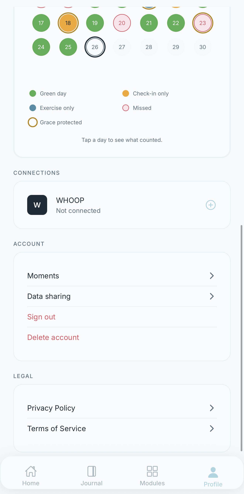
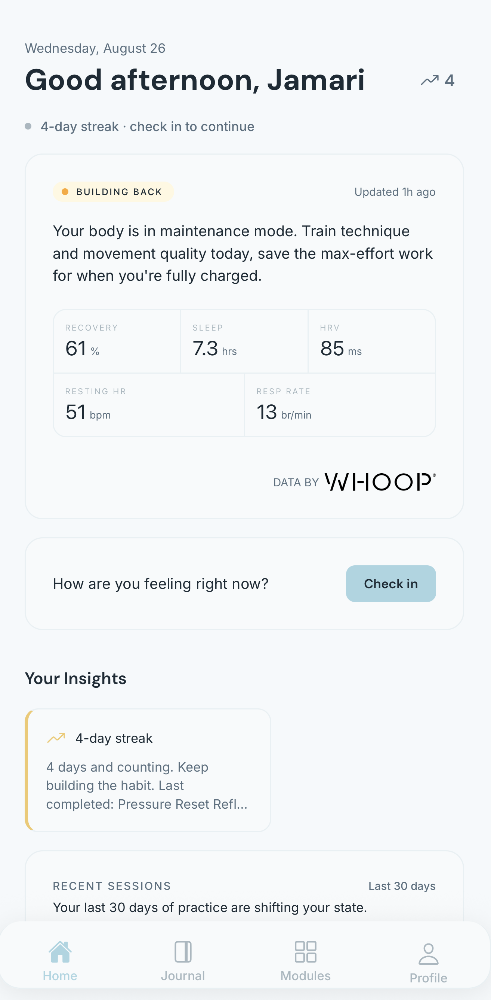
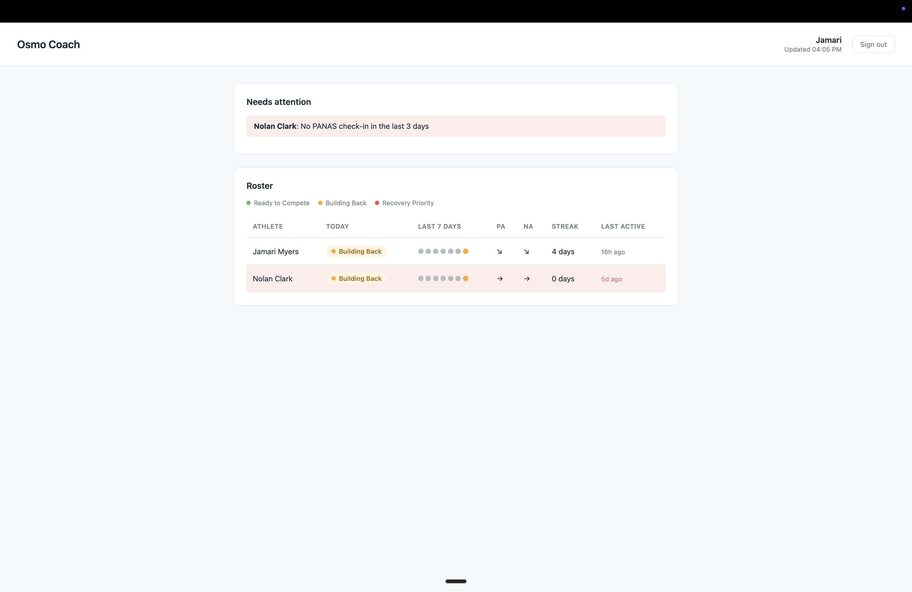

Osmo is an emotional performance platform for collegiate athletes. It combines self-reported PANAS check-ins with WHOOP biometric data to generate a daily readiness briefing and personalized exercises. Athletes see their own WHOOP values, including HRV, resting heart rate, recovery percentage, and sleep. Coaches never see raw WHOOP values. Coaches see only Osmo-derived readiness labels, such as Ready to Compete, Building Back, and Recovery Priority.
Product Walkthrough
The Profile screen is the entry point for connecting a WHOOP account, showing the connection control alongside account and legal settings.

WHOOP's own authorization screen lists the exact data categories Osmo is requesting, including recovery, cycles, sleep, and profile information, before the athlete grants access.

After the athlete grants access, WHOOP redirects back through Osmo's callback page confirming the account is linked.

Once linked, the Profile screen shows WHOOP as connected with no further action required from the athlete.

Athletes can view their own WHOOP-derived values directly in the app, since the restriction on raw values applies only to the coach-facing surface.

The coach-facing roster in Osmo Coach shows only Osmo-derived readiness labels such as Building Back, along with streak and PANAS trend indicators; no raw WHOOP value appears anywhere on this screen.

Disconnecting WHOOP from the Profile screen stops new data collection immediately and schedules the athlete's stored biometric records for deletion after 30 days, with reconnection inside that window restoring history.

Deleting an Osmo account is a separate, permanent action confirmed through this dialog, which immediately and irreversibly removes WHOOP data, check-ins, journal entries, module progress, and coach access.

The Profile screen also links directly to Osmo's Privacy Policy and Terms of Service, both hosted on this same legal site.